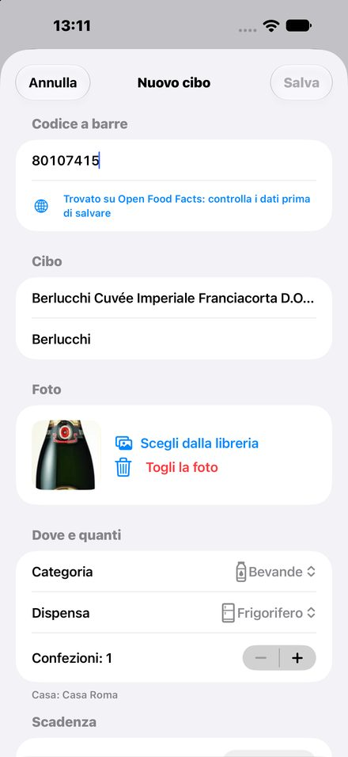
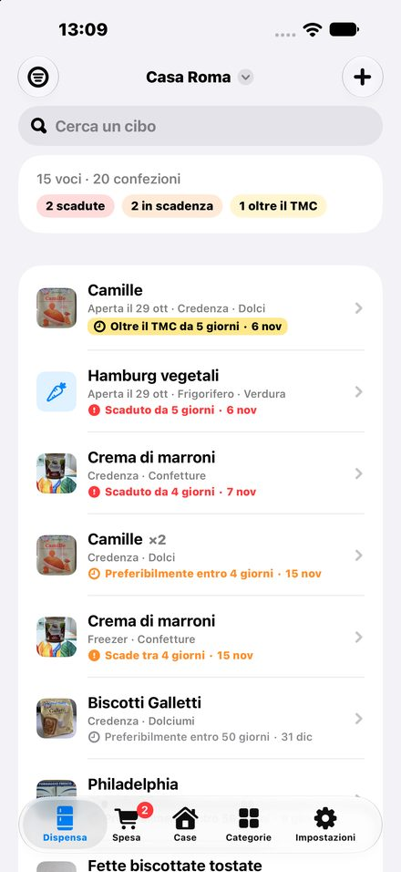
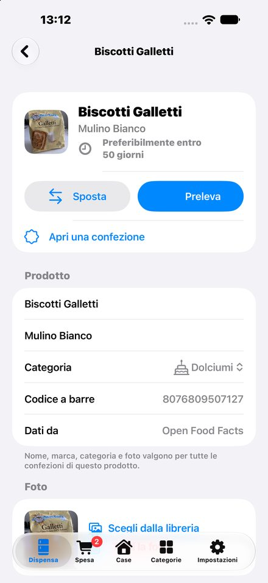
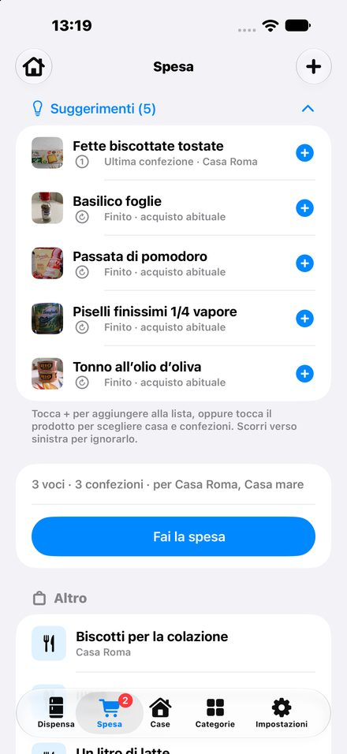
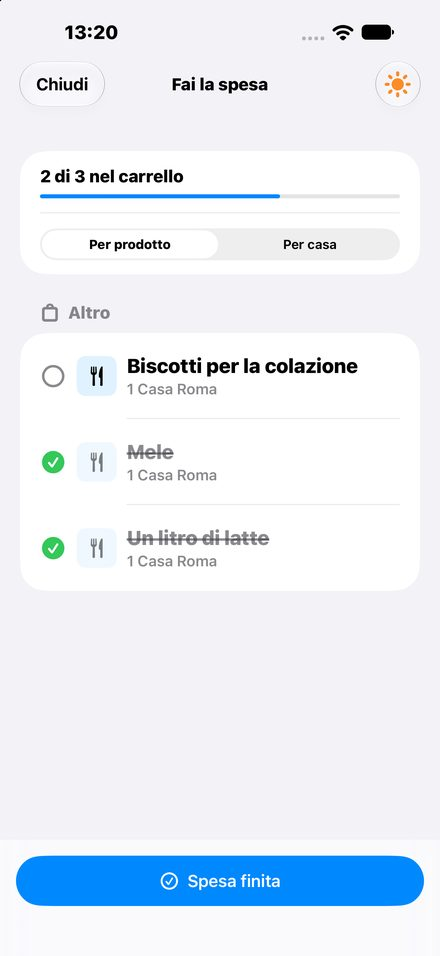

Mangio tutto · Guida
Guida rapida
Le funzioni di Mangio tutto in poche righe. Tocca un argomento per andarci.
- Per cominciare
- Aggiungere un cibo
- Leggere la data con la fotocamera
- L'elenco e i colori
- Prelevare, spostare, aprire
- Lista della spesa e suggerimenti
- Al supermercato
- A voce, con Siri
- Notifiche
- iPhone e iPad insieme
- Testo grande e categorie
Per cominciare
Al primo avvio dai un nome alla tua casa: Mangio tutto la crea con tre dispense (Frigorifero, Freezer, Credenza). Puoi aggiungere altre case e dispense dalla sezione Case.
Aggiungere un cibo
Tocca + e inquadra il codice a barre: nome, marca e foto arrivano dal tuo catalogo o da Open Food Facts. Controllali, scegli categoria e dispensa e salva. Senza codice, scrivi il nome a mano.

Leggere la data con la fotocamera
Tocca Leggi la data dalla confezione e inquadra la scadenza stampata: l'app la legge e la inserisce. Scegli il tipo: Tassativa («da consumarsi entro»), Preferibile («preferibilmente entro») o Nessuna.
L'elenco e i colori
In cima vedi quante voci e confezioni hai e quante sono scadute, in scadenza o oltre il TMC: toccane una per vederle. Il pulsante a sinistra filtra per dispensa o categoria; il campo Cerca trova anche per categoria («pasta», «pesce»).

Prelevare, spostare, aprire
Scorri un cibo verso sinistra per prelevarne una confezione, verso destra per spostarlo o aprire una confezione. Dal dettaglio fai lo stesso con i pulsanti Sposta e Preleva. Una confezione aperta scade prima: l'app accorcia la data da sola.

Lista della spesa e suggerimenti
Nella sezione Spesa aggiungi prodotti con +. I Suggerimenti propongono ciò che sta finendo: imposta una scorta minima nel dettaglio di un prodotto per non restarne mai senza.

Al supermercato
Tocca Fai la spesa: spunta ciò che metti nel carrello, con lo schermo sempre acceso. Alla fine, Spesa finita mette tutto in dispensa subito o più tardi.

A voce, con Siri
Di' «Ehi Siri, app Mangio tutto aggiungi alla spesa», poi il prodotto («latte»). Funziona anche a telefono bloccato. Se Siri chiede quale app usare, rispondi «Mangio tutto». Dall'Apple Watch: in Comandi crea un comando rapido con l'azione «Aggiungi alla spesa» e attiva «Mostra su Apple Watch».
Notifiche
Ogni giorno, all'ora che scegli in Impostazioni, un promemoria ti dice cosa scade. Il promemoria della spesa ti ricorda la lista nei giorni che preferisci.
iPhone e iPad insieme
I dati si sincronizzano tramite il tuo iCloud privato: usa lo stesso Apple Account su tutti i dispositivi. In Impostazioni vedi l'ultimo invio e l'ultima ricezione.
Testo grande e categorie
Mangio tutto segue la dimensione del testo scelta nelle Impostazioni di iOS, anche quelle più grandi. Nelle Categorie puoi scegliere un simbolo o un'emoji (🧀 🥕 🍝) e la soglia di avviso.
Quick guide
Mangio tutto's features in a few lines. Tap a topic to jump to it.
- Getting started
- Adding food
- Reading the date with the camera
- The list and its colors
- Take out, move, open
- Shopping list and suggestions
- At the supermarket
- By voice, with Siri
- Notifications
- iPhone and iPad together
- Larger text and categories
Getting started
On first launch, name your home: Mangio tutto creates it with three pantries (Fridge, Freezer, Pantry). Add more homes and pantries from the Homes section.
Adding food
Tap + and scan the barcode: name, brand and photo come from your catalog or from Open Food Facts. Check them, choose category and pantry, and save. No barcode? Type the name.
Reading the date with the camera
Tap Read the date from the pack and frame the printed date: the app reads it and fills it in. Choose the type: Use by, Best before or None.
The list and its colors
At the top you see how many items and packs you have and how many are expired, expiring or past best-before: tap one to see them. The button on the left filters by pantry or category; Search also finds by category (“pasta”, “fish”).
Take out, move, open
Swipe a food left to take out a pack, right to move it or open a pack. In the detail, use Move and Take out. An opened pack expires sooner: the app shortens the date for you.
Shopping list and suggestions
In Shopping, add products with +. Suggestions show what is running out: set a minimum stock in a product's detail so you never run out.
At the supermarket
Tap Go shopping: check off what goes in the cart, with the screen always on. At the end, Done shopping puts everything away now or later.
By voice, with Siri
Say “Hey Siri, Mangio tutto add to my shopping list”, then the product (“milk”). It works with the phone locked too. If Siri asks which app, answer “Mangio tutto”. From Apple Watch: in Shortcuts create a shortcut with the “Add to shopping list” action and turn on “Show on Apple Watch”.
Notifications
Every day, at the time you choose in Settings, a reminder tells you what is expiring. The shopping reminder recalls your list on the days you prefer.
iPhone and iPad together
Data syncs through your private iCloud: use the same Apple Account on all devices. Settings shows the last send and receive.
Larger text and categories
Mangio tutto follows the text size chosen in iOS Settings, including the largest ones. In Categories you can pick a symbol or an emoji (🧀 🥕 🍝) and the warning threshold.
Guía rápida
Las funciones de Mangio tutto en pocas líneas. Toca un tema para ir a él.
- Para empezar
- Añadir un alimento
- Leer la fecha con la cámara
- La lista y sus colores
- Sacar, mover, abrir
- Lista de la compra y sugerencias
- En el supermercado
- Por voz, con Siri
- Notificaciones
- iPhone e iPad juntos
- Texto grande y categorías
Para empezar
La primera vez, ponle nombre a tu casa: Mangio tutto la crea con tres despensas (Nevera, Congelador, Alacena). Añade más casas y despensas en la sección Casas.
Añadir un alimento
Toca + y enfoca el código de barras: nombre, marca y foto llegan de tu catálogo o de Open Food Facts. Revísalos, elige categoría y despensa y guarda. ¿Sin código? Escribe el nombre.
Leer la fecha con la cámara
Toca Leer la fecha del envase y enfoca la fecha impresa: la app la lee y la introduce. Elige el tipo: Caducidad, Preferente (consumo preferente) o Ninguna.
La lista y sus colores
Arriba ves cuántos artículos y envases tienes y cuántos están caducados, por caducar o con fecha preferente pasada: toca uno para verlos. El botón de la izquierda filtra por despensa o categoría; Buscar también encuentra por categoría («pasta», «pescado»).
Sacar, mover, abrir
Desliza un alimento a la izquierda para sacar un envase, a la derecha para moverlo o abrir un envase. En el detalle, usa Mover y Sacar. Un envase abierto caduca antes: la app acorta la fecha sola.
Lista de la compra y sugerencias
En Compra añade productos con +. Las Sugerencias muestran lo que se está acabando: fija un stock mínimo en el detalle de un producto para no quedarte sin él.
En el supermercado
Toca Hacer la compra: marca lo que va al carro, con la pantalla siempre encendida. Al final, Compra terminada lo guarda todo ahora o más tarde.
Por voz, con Siri
Di «Oye Siri, Mangio tutto, añade a la compra» y después el producto («leche»). Funciona también con el teléfono bloqueado. Si Siri pregunta qué app usar, responde «Mangio tutto». Desde el Apple Watch: en Atajos crea un atajo con la acción «Añadir a la compra» y activa «Mostrar en el Apple Watch».
Notificaciones
Cada día, a la hora que elijas en Ajustes, un recordatorio te dice qué caduca. El recordatorio de la compra te recuerda la lista los días que prefieras.
iPhone e iPad juntos
Los datos se sincronizan con tu iCloud privado: usa la misma Apple Account en todos los dispositivos. En Ajustes ves el último envío y la última recepción.
Texto grande y categorías
Mangio tutto sigue el tamaño de texto elegido en los Ajustes de iOS, incluso los más grandes. En Categorías puedes elegir un símbolo o un emoji (🧀 🥕 🍝) y el umbral de aviso.
Guide rapide
Les fonctions de Mangio tutto en quelques lignes. Touchez un sujet pour y aller.
- Pour commencer
- Ajouter un aliment
- Lire la date avec l'appareil photo
- La liste et ses couleurs
- Sortir, déplacer, ouvrir
- Liste de courses et suggestions
- Au supermarché
- À la voix, avec Siri
- Notifications
- iPhone et iPad ensemble
- Texte agrandi et catégories
Pour commencer
Au premier lancement, nommez votre maison : Mangio tutto la crée avec trois placards (Réfrigérateur, Congélateur, Buffet). Ajoutez d'autres maisons et placards dans la section Maisons.
Ajouter un aliment
Touchez + et cadrez le code-barres : nom, marque et photo viennent de votre catalogue ou d'Open Food Facts. Vérifiez-les, choisissez catégorie et placard, puis enregistrez. Sans code-barres, tapez le nom.
Lire la date avec l'appareil photo
Touchez Lire la date sur l'emballage et cadrez la date imprimée : l'app la lit et la saisit. Choisissez le type : DLC (à consommer jusqu'au), DDM (de préférence avant) ou Aucune.
La liste et ses couleurs
En haut, vous voyez combien d'articles et d'emballages vous avez et combien sont périmés, à consommer vite ou à DDM dépassée : touchez-en un pour les voir. Le bouton de gauche filtre par placard ou catégorie ; Rechercher trouve aussi par catégorie (« pâtes », « poisson »).
Sortir, déplacer, ouvrir
Faites glisser un aliment vers la gauche pour sortir un emballage, vers la droite pour le déplacer ou ouvrir un emballage. Dans le détail, utilisez Déplacer et Sortir. Un emballage ouvert se périme plus vite : l'app raccourcit la date toute seule.
Liste de courses et suggestions
Dans Courses, ajoutez des produits avec +. Les Suggestions montrent ce qui s'épuise : définissez un stock minimum dans le détail d'un produit pour ne jamais en manquer.
Au supermarché
Touchez Faire les courses : cochez ce qui va dans le chariot, écran toujours allumé. À la fin, Courses terminées range tout maintenant ou plus tard.
À la voix, avec Siri
Dites « Dis Siri, Mangio tutto, ajoute aux courses », puis le produit (« lait »). Ça marche aussi téléphone verrouillé. Si Siri demande quelle app utiliser, répondez « Mangio tutto ». Depuis l'Apple Watch : dans Raccourcis, créez un raccourci avec l'action « Ajouter aux courses » et activez « Afficher sur l'Apple Watch ».
Notifications
Chaque jour, à l'heure choisie dans les Réglages, un rappel vous dit ce qui se périme. Le rappel des courses vous rappelle la liste les jours de votre choix.
iPhone et iPad ensemble
Les données se synchronisent via votre iCloud privé : utilisez le même Apple Account sur tous vos appareils. Les Réglages indiquent le dernier envoi et la dernière réception.
Texte agrandi et catégories
Mangio tutto suit la taille de texte choisie dans les Réglages d'iOS, même les plus grandes. Dans Catégories, vous pouvez choisir un symbole ou un émoji (🧀 🥕 🍝) et le seuil d'alerte.